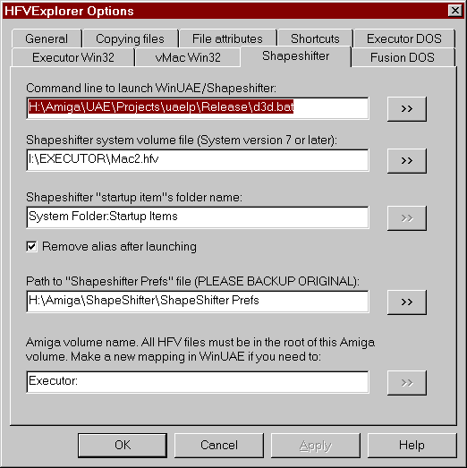

Command line to launch WinUAE/Shapeshifter:
Points to the command you use to launch WinUAE. May be WinUAE itself, a batch file or *.UAE configuration file.
Shapeshifter system volume file:Should be the HFV or DSK file path where you boot Shapeshifter from.
Shapeshifter "startup item"s folder name:The default value is usually fine. Modify if you have renamed your system folder.
Remove alias after launching:Described here.
Path to "Shapeshifter Prefs" file:Shapeshifter keeps the preferences in this file. Since the author of Shapeshifter may change it any time, it is essential that you make a backup copy of this file before launching to Shapeshifter.
Amiga volume name:Note that all the HFV files need to be in the root directory of this Amiga volume, otherwise the launching does not work.